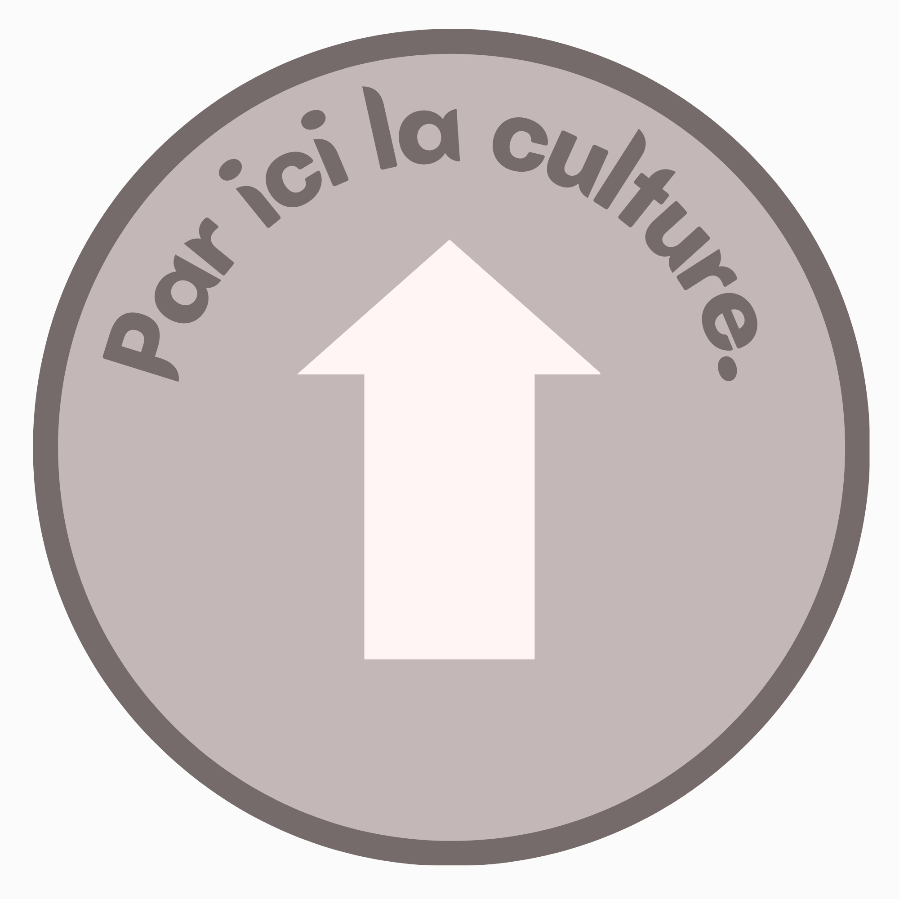
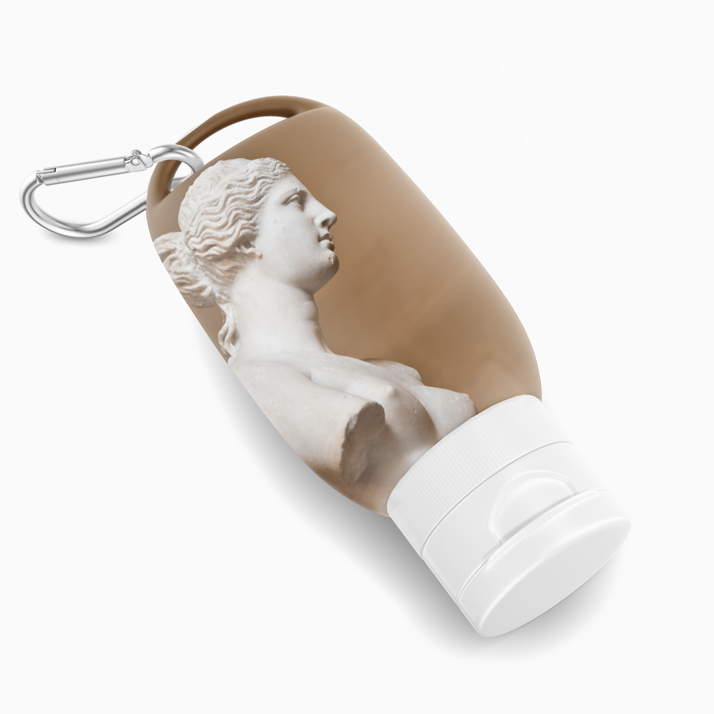
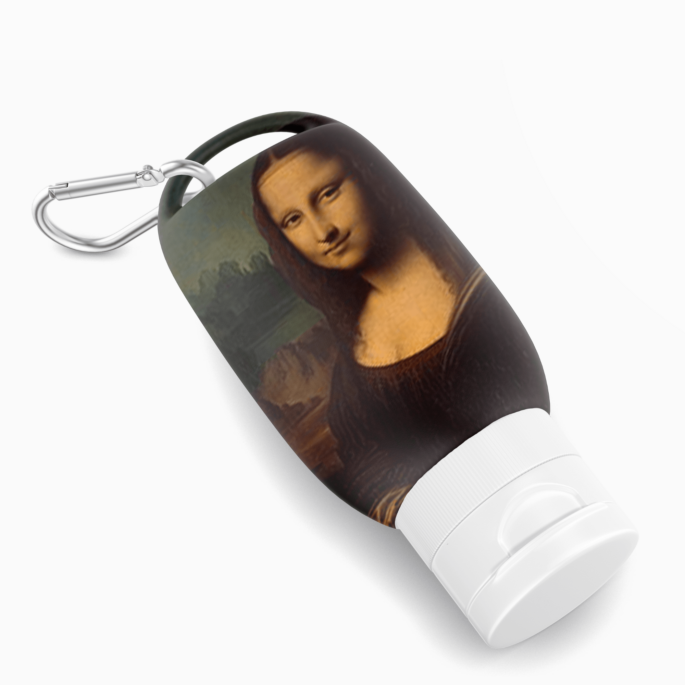
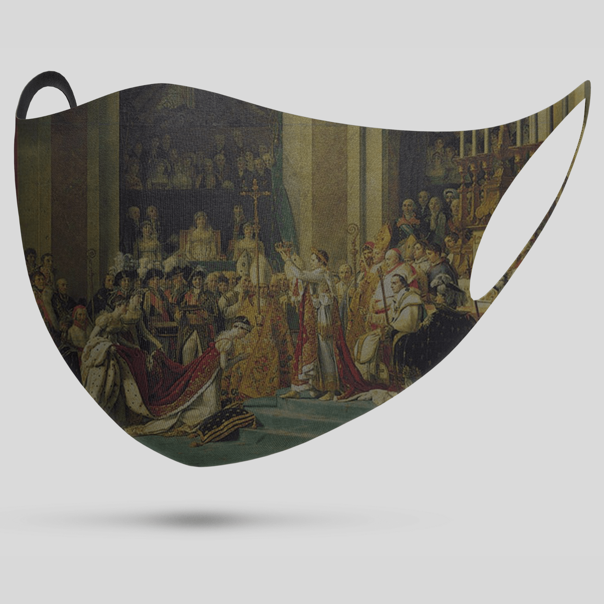
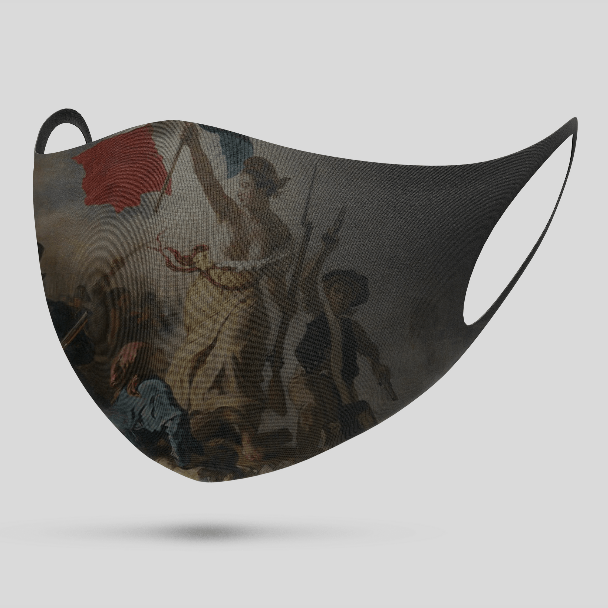

Pour ce projet, j’ai voulu créer une série de visuels renforçant les gestes barrières, de façon implicite ou ludique.
J’ai préféré me concentrer sur un thème artistique et suis partie sur la problématique suivante : Comment renforcer les gestes barrières dans le cadre du musée, sans créer un environnement trop « pandémique » ?
J’ai choisi de créer une signalétique fléchée au sol et des produits de merchandising. Tout le but est de proposer un renforcement des gestes barrières très implicite. Ainsi, le chemin fléché se confond avec un sens de circulation dans une exposition. Et les produits de merchandising seraient présentés comme des petits objets esthétiques, décorés avec des œuvres du musée plutôt connues pour toucher plus de monde. L’idée globale de ce projet est vraiment de dissimuler ce renforcement covid derrière des objets muséaux déjà connus.
Pour davantage concrétiser ce projet, j’ai voulu mettre en contexte ces différentes idées. J’ai choisi pour cela le musée du Louvre, et comme inspiration pour la palette de couleur je me suis appuyer sur la salle des Caryatides, contenant différentes statues mythologiques. L’avantage, selon moi, des phrases d’accroches, du merchandising et de la signalétique fléchée est que ces éléments sont adaptables à différentes expositions et différents musées, en changeant la palette de couleur et les œuvres utilisées dans les visuels. De plus, en dissimulant ces éléments derrière l’environnement muséal, cela permet de ne pas perturber l’expérience du visiteur.
L’objectif de ce projet était réellement de créer quelque chose d’implicite : dans un cadre pandémique angoissant, il me semblait que le musée pouvait être un moyen de se couper, pendant un temps, de cet environnement. Cependant, les gestes barrières restants nécessaires, il a fallu réfléchir à comment les intégrer en se réappropriant complètement la communication des musées.

 
 